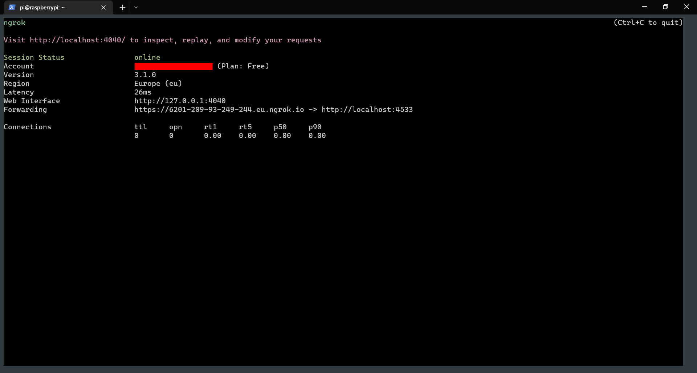
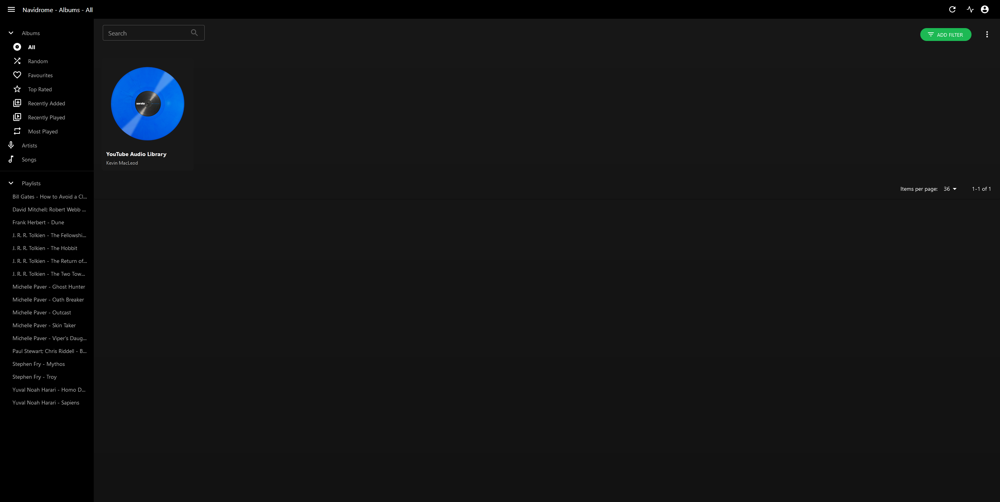
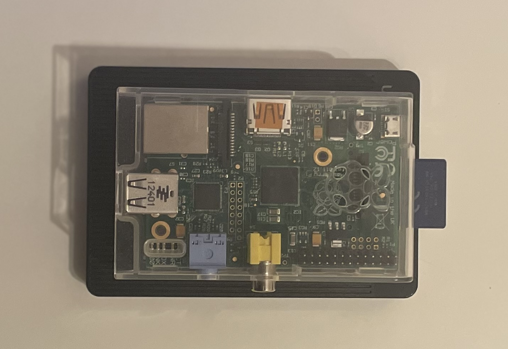
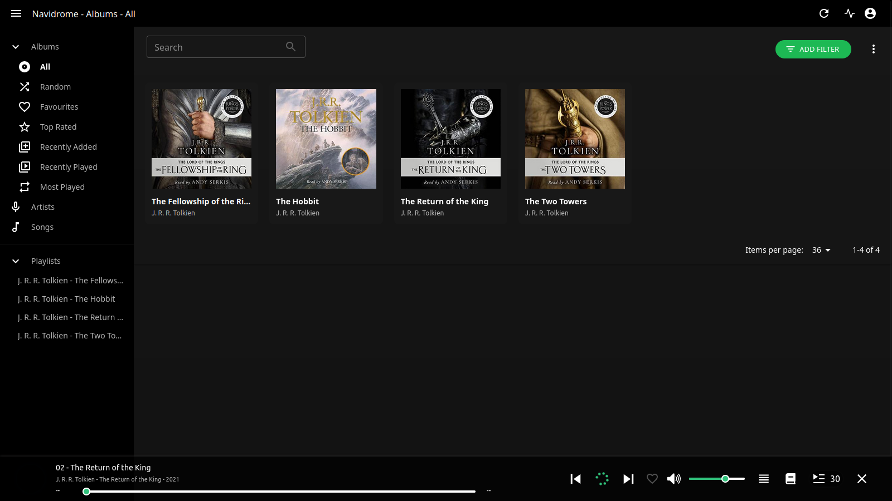

Self-hosted music streaming on a Raspberry Pi
Using the open-source Navidrome project to make a self-hosted Spotify clone.
I got a Raspberry Pi years ago after finishing GCSE Computing at school and could never quite figure out what to do with it.
Recently though I found out about a project called Navidrome:
Navidrome is an open source web-based music collection server and streamer. It gives you freedom to listen to your music collection from any browser or mobile device. It’s like your personal Spotify!
- (from the Github README)
It’s compatible with the Subsonic API which is accessible from a number of music player client across mobile, desktop and web platforms.
I thought this would be a perfect project to do to store some of my downloaded music and audiobooks, finally making use of the Pi and learning a bit about Linux along the way.
🍓 Setting up the Raspberry Pi
The first step was to set up my Raspberry Pi. I plugged in the SD card and installed Raspberry Pi OS (formerly known as Raspbian). This is a fork of Linux based on Debian and as such is similar to Ubuntu. The Raspberry Pi Imager tool makes this really easy and is available for Windows, Mac and Linux.
Due to the low memory of my 4GB SD card I installed a 32-bit OS with no GUI, but any OS would work here.
ssh
SSH is a protocol that lets you remote access devices as if you were physically using them. It was really useful to allow me to use the Pi without keeping a screen and keyboard plugged in. I used ifconfig to find the IP address of the Pi then ssh pi@<ip_address> to login with the username/password combo for the pi user.
💿 Installing Navidrome
I followed the official install guide for Linux: https://www.navidrome.org/docs/installation/linux/
It’s important to know the architecture of the Pi processor to get the correct version of Navidrome from the releases page. Running uname -a told me mine was armv6 so I installed the .armv6 download.
I set up a sample folder on the SD card for now with a sample track in:
sudo mkdir Music cd Music wget https://file-examples.com/wp-content/uploads/2017/11/file_example_MP3_700KB.mp3
The final step in the guide of setting Navidrome up as a service is useful as it’ll run in the background and boot whenever the Pi is powered on.
ngrok
I also installed ngrok at this point to double check that Navidrome works and that I could play from my phone/laptop. ngrok is a popular tunneling tool which can expose applications running on a computer’s local port with a globally accessible web address.
Navidrome by default runs on port 4533 so running ngrok http 4533 exposes this and gives an address:

It was easy to set up an admin user and configure Navidrome from there:

🌐 Setting up a persistent domain
ngrok is a great tool for testing and developing, but the domain above is long and unmemorable. It also changes each time ngrok runs. ngrok does support custom persistent domains, but unfortunately not on the free tier and I wasn’t willing to spend $20/month on the Pro tier.
Fortunately, there are some very cheap domain names out there. I used Namecheap and searched with their “Beast Mode” tool to get a load of domains roughly similar to what I wanted, filtering for those under £10/year. In the end I went with a .click TLD for the truly gargantuan sum of £1.07 for the first year 💸
⛏️ Tunnelling with Cloudflare
As a free alternative to ngrok, Cloudflare provides tunnelling which performs a similar function.
Moving to Cloudflare
The first step was to move the site to be managed by Cloudflare. Namecheap has a guide for this which I followed: https://www.namecheap.com/support/knowledgebase/article.aspx/9607/2210/how-to-set-up-dns-records-for-your-domain-in-cloudflare-account/
I didn’t worry about changing DNS for now, just swapping the nameservers over to Cloudflare’s.
Creating the tunnel
For creating the tunnel, I followed this guide: https://dev.to/omarcloud20/a-free-cloudflare-tunnel-running-on-a-raspberry-pi-1jid
It took an amount of time for the changes to take effect, but was done by the time I’d finished lunch.
As with Navidrome, running this tunnel as a Linux service is really useful as it’ll autostart whenever the Pi is powered on.
🗄️ Mounting an external hard drive
Because the SD card I had was rather small for storage, I bought a cheap 500GB external USB hard drive online. This was quite nice as it had a similar footprint to the Pi.

I loaded a couple of audiobooks onto it from my Windows library, then plugged it into Pi.
Linux is slightly different to Windows in that it doesn’t automatically load other attached filesystems. Rather, these have to be “mounted” onto a path on the main filesystem so that they can be read. Additionally, there are different types of filesystems (e.g. NTFS, FAT32, EXT4) so I had to figure out what kind the drive was in order to mount it.
sudo fdisk -l is used to list devices and will probably output a large list depending on what is detected. An easy way to find out which device the hard drive was was to compare the output of the command before and after plugging in the drive. In my case, it was /dev/sda1:
pi@raspberrypi:~ $ sudo fdisk -l ... Disk /dev/sda: 465.76 GiB, 500107862016 bytes, 976773168 sectors Disk model: Generic Units: sectors of 1 \* 512 = 512 bytes Sector size (logical/physical): 512 bytes / 512 bytes I/O size (minimum/optimal): 512 bytes / 512 bytes Disklabel type: dos Disk identifier: 0xe19ed2ec Device Boot Start End Sectors Size Id Type /dev/sda1 2048 976771071 976769024 465.8G 7 HPFS/NTFS/exFAT
Type is important here as it shows the type of filesystem for mounting, in this case HPFS/NTFS/exFAT.
I created a new folder in /media to be the mount point for the drive with sudo mkdir /media/UnionSineExternal.
The command sudo mount -t <filesystem_type> /dev/sda1 /media/UnionSineExternal/ was used to mount the drive. I wasn't sure which type to use given the above output so I tried them all. hpfs wasn't found by mount and ntfs was throwing errors. Luckily, exfat worked.
I then modified /var/lib/navidrome/navidrome.toml's MusicFolder variable to point to the mounted drive to set the new Navidrome music location, and ran sudo systemctl restart navidrome.service to restart Navidrome.

Auto-mount drive on boot
The last thing to do was make sure the drive automatically mounted on boot.
Linux stores a list of persistent filesystems in the file found in /etc/. I used lsblk -f to list the drive and find its UUID:
pi@raspberrypi:~ $ lsblk -f NAME FSTYPE FSVER LABEL UUID FSAVAIL FSUSE% MOUNTPOINT sda └─sda1 exfat 1.0 UnionSine 902D-8BC0 461.7G 1% /media/UnionSineExternal
I then added a line to the bottom of /etc/fstab to add this as a filesystem:
# device dir type options dump fsck UUID=902d-8BC0 /media/UnionSineExternal exfat nofail,x-systemd.device-timeout-1000ms 0 2
Here I specified the UUID found from before, the directory to mount to, and the type of filesystem. The options told the Pi not to fail booting if the drive couldn’t be found (nofail) and to set a timeout of 1s in which to attempt finding the drive before moving on (x-systemd.device-timeout-1000ms). A dump of 0 tells the Pi not to backup the drive, while an fsck of 2 tells the Pi to check errors at boot, but that this isn't a root device.
Running sudo mount -a after this remounted the drives according to fstab, however I found this wasn't working properly when rebooting the Pi.
To solve this I took inspiration from a StackOverflow answer which suggested adding a system cron job to run the mount command whenever the Pi is rebooted.
sudo crontab -e opens the file so I could add a reboot-triggered job to be executed as the root user (the sudo is important here!):
@reboot mount -a
Rebooting the Pi now started Navidrome, mounted the music library off an external hard drive and opened a network tunnel to make the streaming service globally accessible. Nice 👌😎
✨ Some bonus bits
journalctl -n -f -u navidrome.service- shows tailed log output from Navidromesudo systemctl status navidrome.service- shows status of Navidrome service
🎧 Clients
These are the clients I’ve been using so far with Navidrome. Any client which interfaces with the Subsonic API will work, however.
- Web — The inbuilt Navidrome web client is pretty good. It is easy to use to manage users and other bits of config and has a variety of themes.
- Desktop — Sonixd runs across Windows, Mac and Linux and feels very similar to Spotify’s desktop client. Like Navidrome it is themeable and provides playback options for crossfading etc.
- Mobile — Subtracks is generally pretty good. Its featureset is a tad more limited than other Android music players but like the other two clients is open-source and seems to be receiving frequent updates.
And that’s it!